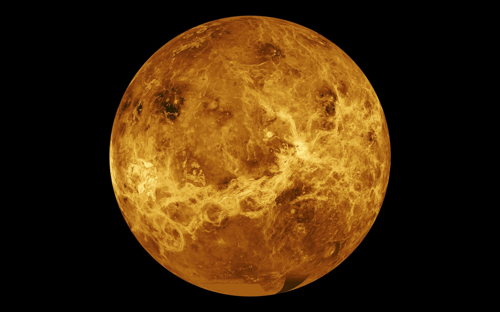

Venus
When Venus is west of the Sun, she rises before the Sun in the morning and is known as the Morning Star. When she is east of the Sun, she shines in the evening just after sunset and is known as the Evening Star.
Venus has phases like the moon because the orbit of Venus is between the Earth and the Sun. When Venus shows only a crescent, like the crescent moon, she is at her brightest because she is then very close to the Earth. You can only see the crescent with the help of a telescope, but this photograph shows the crescent moon and a bright Venus in the evening sky.

Venus is called after the Roman Goddess of love and beauty.
Venus is covered by clouds of water vapour and sulphuric acid and the surface cannot be seen with an ordinary astronomy telescope.
The atmosphere on Venus is composed of carbon dioxide. The surface is heated by radiation from the sun, but the heat cannot escape through the clouds and layer of carbon dioxide. (This is a “greenhouse effect”).
